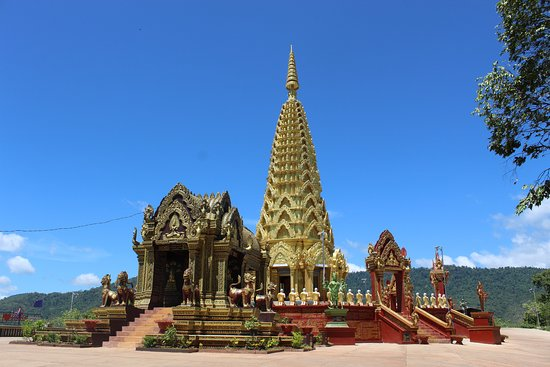
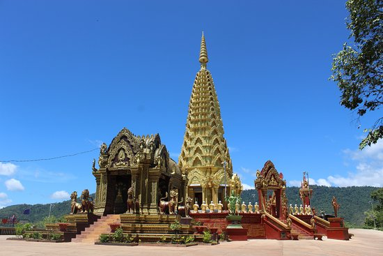

Pailin (Khmer: ប៉ៃលិន, Khmer pronunciation: [pai lɨn]) is a province (khaet) in western Cambodia at the northern edge of the Cardamom Mountains near the border of Thailand.[3] This province is surrounded by Battambang Province, and was officially carved out of Battambang to become a separate administrative division after the surrender of the Ieng Sary faction of the Khmer Rouge in 1996.[4] Pailin is known to much of the world for having long been a stronghold of the Khmer Rouge,[5] remaining under their control long after they were defeated in 1979 and serving from 1994 to 1998 as the capital of the Provisional Government of National Union and National Salvation of Cambodia. Within Cambodia Pailin is known for its natural resources, namely precious gems and timber.
Once a part of the powerful Khmer Empire, Pailin was conquered in 1558 by the Burmese under Bayinnaung[6] and later ruled by the Siamese (Thai) until 1907 and from 1941 to 1946 when it was returned to Cambodia. It was known to the Thai as "Phailin" (Thai: ไพลิน, Thai pronunciation: [pʰāj.lin]). There is still a vibrant border crossing point in Pailin. On 22 December 2008, King Norodom Sihamoni signed a Royal Decree that changed the municipalities of Kep, Pailin and Sihanoukville into provinces, as well as adjusting several provincial borders.[7][8]